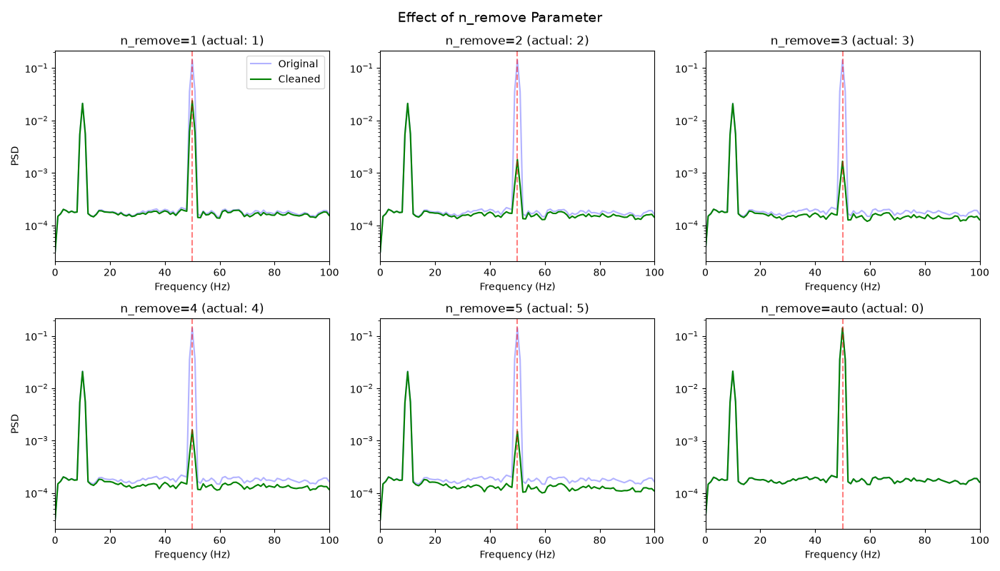
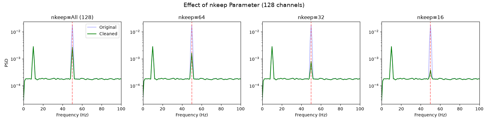
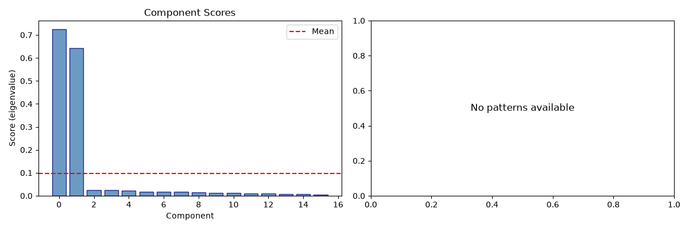

Note
Go to the end to download the full example code.
ZapLine: Parameter Tuning and Real Data.#
This tutorial covers: 1. Parameter exploration (n_remove, nkeep, threshold) 2. Real MEG data from NoiseTools 3. Comparing different parameter settings
- Authors: Sina Esmaeili (sina.esmaeili@umontreal.ca)
Hamza Abdelhedi (hamza.abdelhedi@umontreal.ca)
Imports#
from pathlib import Path
import matplotlib.pyplot as plt
import numpy as np
from scipy import signal
from scipy.io import loadmat
from mne_denoise.viz.zapline import (
plot_cleaning_summary,
plot_component_scores,
plot_psd_comparison,
plot_spatial_patterns,
)
from mne_denoise.zapline import ZapLine
Part 1: n_remove Parameter#
The n_remove parameter controls how many spatial components are removed. Too few: line noise remains. Too many: neural signal lost.
print("Part 1: Exploring n_remove parameter")
# Generate synthetic data with multiple line noise sources
sfreq = 1000
duration = 5
n_channels = 16
n_times = int(sfreq * duration)
t = np.arange(n_times) / sfreq
rng = np.random.RandomState(42)
# Create 3 distinct line noise sources (simulating multiple power sources)
n_line_sources = 3
line_patterns = rng.randn(n_channels, n_line_sources)
for i in range(n_line_sources):
line_patterns[:, i] /= np.linalg.norm(line_patterns[:, i])
# Neural pattern
neural_pattern = rng.randn(n_channels)
neural_pattern /= np.linalg.norm(neural_pattern)
# Generate data
neural_source = np.sin(2 * np.pi * 10 * t)
line_sources = np.zeros((n_line_sources, n_times))
for i in range(n_line_sources):
phase = rng.uniform(0, 2 * np.pi)
amp = 2.0 - i * 0.5 # Decreasing amplitude
line_sources[i] = amp * np.sin(2 * np.pi * 50 * t + phase)
data = np.zeros((n_channels, n_times))
for i in range(n_channels):
data[i] = neural_pattern[i] * neural_source
for j in range(n_line_sources):
data[i] += line_patterns[i, j] * line_sources[j]
data[i] += rng.randn(n_times) * 0.3
print(f"Data with {n_line_sources} line noise sources")
Part 1: Exploring n_remove parameter
Data with 3 line noise sources
Compare Different n_remove Values#
fig, axes = plt.subplots(2, 3, figsize=(14, 8))
n_remove_values = [1, 2, 3, 4, 5, "auto"]
for idx, n_remove in enumerate(n_remove_values):
row, col = idx // 3, idx % 3
ax = axes[row, col]
est = ZapLine(line_freq=50, sfreq=sfreq, n_remove=n_remove)
est.fit(data)
cleaned = est.transform(data)
freqs, psd_orig = signal.welch(data, sfreq, nperseg=sfreq)
freqs, psd_clean = signal.welch(cleaned, sfreq, nperseg=sfreq)
ax.semilogy(freqs, np.mean(psd_orig, axis=0), "b-", alpha=0.3, label="Original")
ax.semilogy(freqs, np.mean(psd_clean, axis=0), "g-", label="Cleaned")
ax.axvline(50, color="r", linestyle="--", alpha=0.5)
ax.set_xlim(0, 100)
ax.set_title(f"n_remove={n_remove} (actual: {est.n_removed_})")
ax.set_xlabel("Frequency (Hz)")
if col == 0:
ax.set_ylabel("PSD")
if idx == 0:
ax.legend()
plt.suptitle("Effect of n_remove Parameter", fontsize=14)
plt.tight_layout()
plt.show()

Part 2: nkeep Parameter (High Channel Count)#
For data with many channels, the optional nkeep parameter reduces dimensionality before DSS to avoid overfitting.
print("\nPart 2: nkeep parameter for high-channel data")
# Create high-channel-count data
n_channels_high = 128
data_high = np.zeros((n_channels_high, n_times))
# Multiple line sources with different spatial patterns
n_line_sources = 2
line_patterns_high = rng.randn(n_channels_high, n_line_sources)
for i in range(n_line_sources):
line_patterns_high[:, i] /= np.linalg.norm(line_patterns_high[:, i])
neural_pattern_high = rng.randn(n_channels_high)
neural_pattern_high /= np.linalg.norm(neural_pattern_high)
for i in range(n_channels_high):
data_high[i] = neural_pattern_high[i] * neural_source
for j in range(n_line_sources):
data_high[i] += line_patterns_high[i, j] * line_sources[j]
data_high[i] += rng.randn(n_times) * 0.3
print(f"High-channel data: {data_high.shape}")
Part 2: nkeep parameter for high-channel data
High-channel data: (128, 5000)
Compare Different nkeep Values#
fig, axes = plt.subplots(1, 4, figsize=(16, 4))
nkeep_values = [None, 64, 32, 16]
for idx, nkeep in enumerate(nkeep_values):
ax = axes[idx]
est_high = ZapLine(line_freq=50, sfreq=sfreq, n_remove=2, nkeep=nkeep)
est_high.fit(data_high)
cleaned_high = est_high.transform(data_high)
freqs, psd_orig = signal.welch(data_high, sfreq, nperseg=sfreq)
freqs, psd_clean = signal.welch(cleaned_high, sfreq, nperseg=sfreq)
ax.semilogy(freqs, np.mean(psd_orig, axis=0), "b-", alpha=0.3, label="Original")
ax.semilogy(freqs, np.mean(psd_clean, axis=0), "g-", label="Cleaned")
ax.axvline(50, color="r", linestyle="--", alpha=0.5)
ax.set_xlim(0, 100)
ax.set_title(f"nkeep={nkeep if nkeep else 'All (128)'}")
ax.set_xlabel("Frequency (Hz)")
if idx == 0:
ax.set_ylabel("PSD")
ax.legend()
plt.suptitle("Effect of nkeep Parameter (128 channels)", fontsize=14)
plt.tight_layout()
plt.show()

Part 3: Component Scores#
The eigenvalues (scores) indicate how much each component carries line noise. High scores = strong line noise.
print("\nPart 3: Understanding component scores")
est_scores = ZapLine(line_freq=50, sfreq=sfreq, n_remove="auto")
est_scores.fit(data)
# Use the reusable viz functions
fig, axes = plt.subplots(1, 2, figsize=(12, 4))
plot_component_scores(est_scores, ax=axes[0], show=False)
plot_spatial_patterns(est_scores, n_patterns=3, ax=axes[1], show=False)
plt.tight_layout()
plt.show()

Part 3: Understanding component scores
Part 4: Real MEG Data (NoiseTools)#
Apply ZapLine to real MEG data from NoiseTools dataset. Data from: http://audition.ens.fr/adc/NoiseTools/DATA/
print("\nPart 4: Real MEG Data")
# Find data directory
# Find data directory - handle both script calculation and gallery execution
try:
script_dir = Path(__file__).parent
except NameError:
script_dir = Path.cwd()
data_dir = script_dir / "data"
# Load data1.mat (MEG with large near-DC fluctuations)
data1_path = data_dir / "data1.mat"
if data1_path.exists():
mat = loadmat(str(data1_path))
meg_data = mat["data"].T # Transpose to (channels, times)
sfreq_meg = float(mat["sr"].flatten()[0])
# Demean
meg_data = meg_data - np.mean(meg_data, axis=1, keepdims=True)
print(f"Loaded data1.mat: {meg_data.shape}, sfreq={sfreq_meg} Hz")
print("MEG data with large near-DC fluctuations")
else:
print(f"Data not found: {data1_path}")
print("Download from: http://audition.ens.fr/adc/NoiseTools/DATA/data1.mat")
meg_data = None
Part 4: Real MEG Data
Data not found: /home/runner/work/mne-denoise/mne-denoise/examples/zapline/data/data1.mat
Download from: http://audition.ens.fr/adc/NoiseTools/DATA/data1.mat
Apply ZapLine to MEG Data#
if meg_data is not None:
# Apply ZapLine (60 Hz for this dataset)
est_meg = ZapLine(
line_freq=60,
sfreq=sfreq_meg,
n_remove=2, # As in MATLAB example
)
est_meg.fit(meg_data)
cleaned_meg = est_meg.transform(meg_data)
print(f"Components removed: {est_meg.n_removed_}")
# %%
# Compare Before/After for MEG
# ^^^^^^^^^^^^^^^^^^^^^^^^^^^^
# Use reusable viz function for PSD comparison
plot_psd_comparison(
meg_data, cleaned_meg, sfreq_meg, line_freq=60, fmax=150, show=True
)
# Show comprehensive summary
plot_cleaning_summary(
meg_data, cleaned_meg, est_meg, sfreq_meg, line_freq=60, show=True
)
# %%
# Measure Reduction
# ^^^^^^^^^^^^^^^^^
idx_60 = np.argmin(np.abs(freqs - 60))
power_60_orig = np.mean(psd_orig[:, idx_60])
power_60_clean = np.mean(psd_clean[:, idx_60])
reduction_db = 10 * np.log10(power_60_orig / power_60_clean)
print("\n=== MEG Results ===")
print(f"60 Hz power reduction: {reduction_db:.1f} dB")
print(f"Components removed: {est_meg.n_removed_}")
Conclusion#
Key parameter guidelines:
n_remove: Start with “auto” or 1-3. Increase if line noise remains.
nkeep: Use for high-channel data (>64). Try 32-64.
threshold: For “auto” mode. Lower = more aggressive removal.
n_harmonics: Usually auto-detected. Increase for high sfreq data.
Total running time of the script: (0 minutes 1.717 seconds)